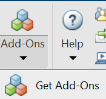
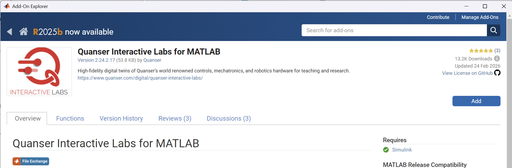
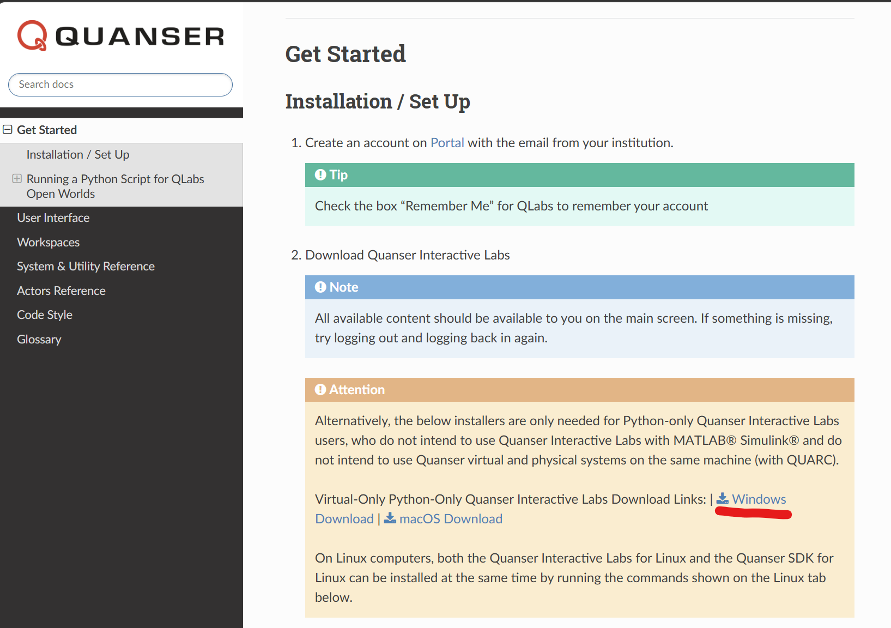
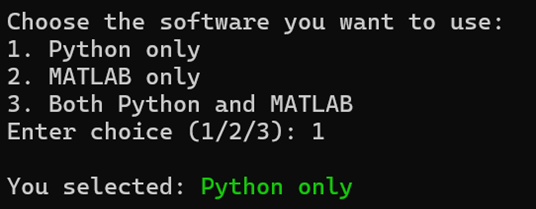
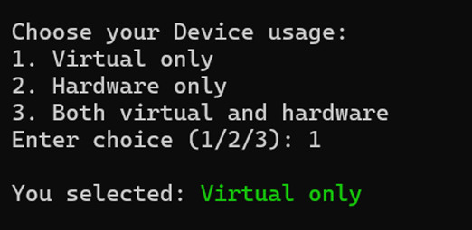
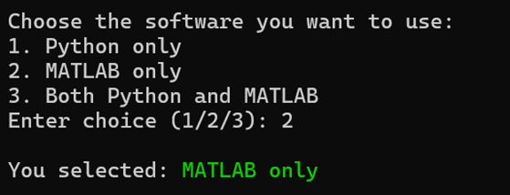
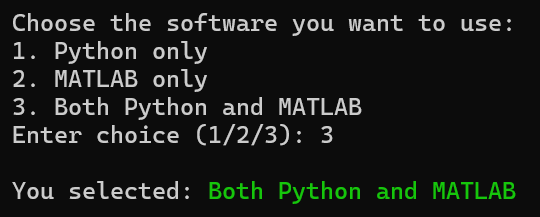
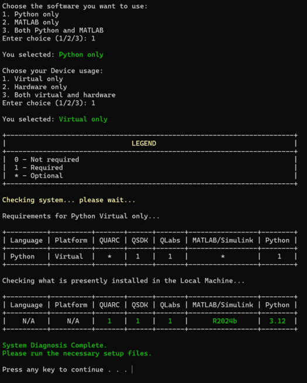

System and Software Setup
Hardware Requirements
Recommended hardware specifications for participating teams.
| Tier | CPU | RAM | GPU |
|---|---|---|---|
| Minimum Specifications | Intel Core Ultra 5 / Intel Core i5 / Ryzen 5 | 8GB | Intel Iris Xe or Intel Arc integrated GPU |
| Recommended Specifications | Intel Core Ultra 7 / Intel Core i7 / Ryzen 7 | 16GB | Intel Arc integrated GPU or discrete GPU (e.g., NVIDIA GeForce RTX 3050) |
| Recommended Research Specifications | Intel Core Ultra 7 / Intel Core i7 / Ryzen 7 | 32GB | Discrete GPU (e.g., NVIDIA GeForce RTX 3050) |
Software Setup & Installation
Required software installation and configuration before running the AICA competition files.
If you are using both MATLAB / Simulink and Python, follow both sections below.
If you are using only one workflow, follow the corresponding section only.
Step 1 -- Initial Download
Before software installation,
On your system, create a folder called Quanser under Documents. This should look like C:/Users/user/Documents/Quanser. download the documentation and competition runtime files into your local Documents/Quanser workspace.
1A) Download Competition Files
A separate folder for actual competition files.
With Git
- Install Git.
- Open a terminal in
C:\Users\<YourUsername>\Documents\Quanser\. - Clone the repository: https://github.com/UTADNCLab/IEEE-SMC-AICA-Competition-2026.git
Without Git (ZIP)
- Open the repository on GitHub.
- Click Code -> Download ZIP.
- Extract the ZIP and place it at:
C:\Users\<YourUsername>\Documents\Quanser
1B) Expected Local Layout
C:\Users\<YourUsername>\Documents\Quanser\
0_libraries, 1_setup ..\
9_AICA_Competition_Files\
For detailed installation guide for Quanser resources refer: Quanser_Academic_Resources
Step 2 -- Install Required Software
MATLAB (2023a or later)
- Download: MATLAB for Windows
- In MATLAB, install Quanser Interactive Labs for MATLAB via Add-On Explorer.


C Compiler (required for Simulink workflows)
- Download: Visual Studio Community
Python (3.12 recommended)
- Download from: Python Official Downloads
WARNING ⚠️❗Make sure to click on the Add Python to PATH option in the first screen of the installer.
NOTE: IF YOU DOWNLOAD FROM THE PYTHON WEBSITE, DO NOT USE THE PYTHON INSTALL MANAGER
Quanser Interactive Labs (QLabs)
- Install via MATLAB Add-On Explorer (MATLAB workflow), or
- Install standalone: QLabs Getting Started

Note: If you are using both MATLAB / Simulink and Python, QLabs only needs to be installed once using either of the methods above.
Step 3 -- Check System Requirements
Navigate to:
C:\Users\<YourUsername>\Documents\Quanser\5_research\1_setup\
Run step_1_check_requirements and select your mode:
| Selection | Software you want to use | Device Usuage |
|---|---|---|
| When only using Python | Python Only (Option 1) | Virtual Only (Option 1) |
| When only using MATLAB | MATLAB Only (Option 2) | Virtual Only (Option 1) |
| When using both | Both Python + MATLAB (Option 3) | Virtual Only (Option 1) |
| Workflow | Software Selection | Device Usage Selection |
|---|---|---|
| Python Only |  |
 |
| MATLAB Only |  |
|
| Python + MATLAB |  |
A green highlighted box indicates successful configuration and required dependencies are available.
Example: Successful Setup Check ( will update this when we test on system without QUARC now in my image there is 1 in QUARC column)
The image below shows an example of a successful step_1_check_requirements result.

In a successful setup check:
- the required dependencies are detected correctly
- installed software versions are shown
- the system diagnosis completes without missing required tools
Use this as a reference when validating your environment configuration.
Step 4 -- Configure Environment
From 1_setup, run:
configure_python.bat
configure_matlab.bat
- Run
configure_python.batfor Python workflow only -
Run
configure_matlab.batfor MATLAB workflow only -
Run both files when using both Python + MATLAB
Restart your system after running setup scripts before continuing.